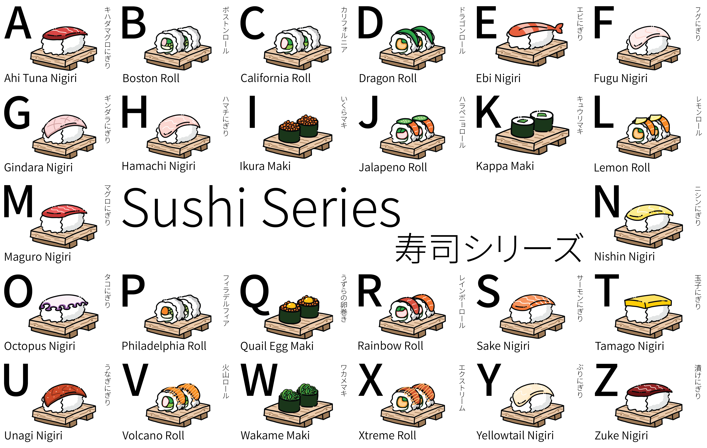

I worked on creating a poster about sushi, which includes 26 different types of sushi that encompass the entire alphabet.
Sushi Series

The color palette of this poster creates an alternate-complementary harmony. I also used the typeface Source Han Sans CJK Japanese because it is suitable for both English and Japanese text.